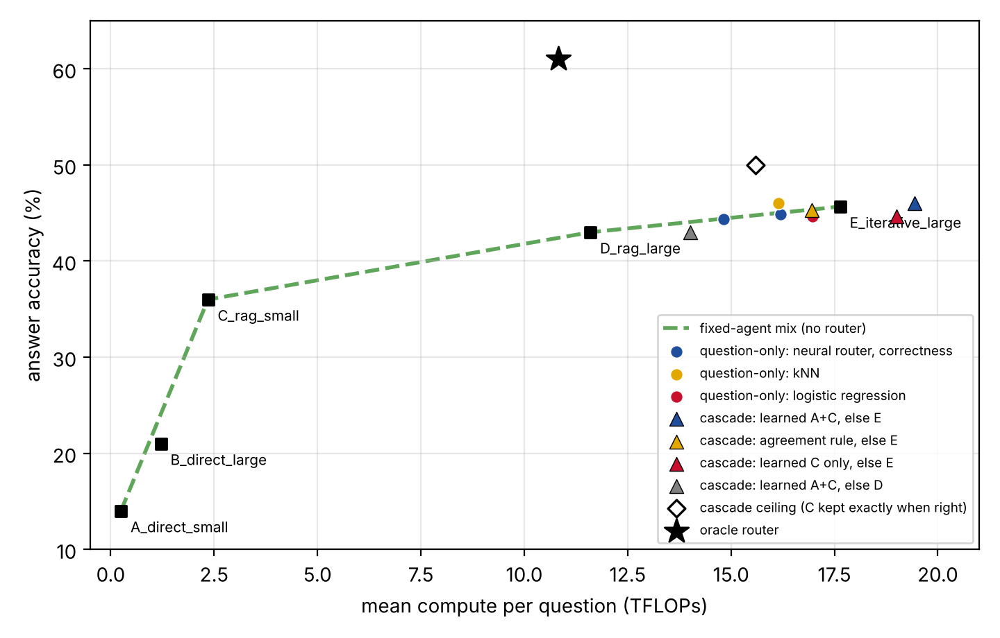

Experiment · Agentic AI · Retrieval-augmented generation
Routing questions between RAG agents leaves a 15-point gap on the table, and nothing we tried could find it
How much compute can a router save by sending each question to the cheapest RAG agent that will get it right, and how much of that is reachable in practice?
By Muzammal Hussain · 25 November 2026 · Research update
A system with several retrieval-augmented agents of different cost could save compute by sending each question to the cheapest agent that will answer it correctly. That promise rests on the oracle: a router that already knows which agent will be right. We measured how much of the oracle's saving real routers and cascades can reach.
Key findings
- The oracle ceiling is large. Picking the cheapest correct agent per question gives 61.0% accuracy at 61% of the compute of the strongest agent, which alone reaches 45.7%.
- Learned routers do not reach it. A neural router, logistic regression and kNN over question embeddings all stayed within 1.5 points of a fixed mix of agents.
- Cascades escalate almost everything. The best cascade matched the strongest agent's accuracy at 110% of its compute, escalating 92% of questions.
- The gap comes from disagreement, not difficulty. 11 of the oracle's 15 extra points are questions that neither the strongest agent nor the small retrieval agent answered.
Setup
Five agents of different cost were built from Qwen2.5 1.5B and 7B: no retrieval, one retrieval step, or iterative retrieval. They answered 2,000 questions from NQ-Open, SQuAD, HotpotQA and MuSiQue over one pooled corpus, and every answer was scored and its compute measured, so every routing policy can be evaluated on the same saved answers. We tested question-only routers (a gated neural router over question embeddings with five seeds, logistic regression and k-nearest neighbours) and answer-level cascades that run the cheap agents first and escalate when their answers disagree, refuse or look unreliable. The reference is the fixed-agent mix: the best accuracy reachable at each compute budget by sending a fixed share of questions to each agent, without looking at the question at all.

Results
| Policy (300 test questions) | Accuracy | Compute vs strongest agent |
|---|---|---|
| Strongest agent alone (7B, iterative retrieval) | 45.7% | 100% |
| 7B, one retrieval step | 43.0% | 66% |
| 1.5B, one retrieval step | 36.0% | 13% |
| Oracle: cheapest correct agent | 61.0% | 61% |
| Neural router (5 seeds, default threshold) | 45.0 ± 0.7% | 74% |
| kNN router | 46.0% | 92% |
None of the learned routers was significantly better than simply sending every question to the strongest agent (exact McNemar p ≥ 0.33), and the neural router did no better than logistic regression or kNN. The best cascade matched the strongest agent at 110% of its compute, because 92% of questions were escalated. Even a cascade that knew exactly when the small retrieval agent was right would reach only 50.0%.
What this means
The oracle's gain does not come from easy questions that a cheap agent can handle; 11 of its 15 extra points come from questions that neither the strongest agent nor the small retrieval agent answered, only the others. Agents are right on different questions, and in this setting neither the question text nor the cheap agents' answers revealed which. Before building a router, it is worth checking how much of the oracle gap a fixed mix already explains.
Limitations
One model family at two sizes, four English QA datasets and one pooled corpus; compute is measured in FLOPs, not latency or price. Other agent pools, especially ones that differ more in skill, may be easier to route.
Paper: Hussain, M. (2026). Routers and Cascades Miss a 15-Point Oracle Gap in Multi-Agent RAG. Zenodo. doi:10.5281/zenodo.24464707.